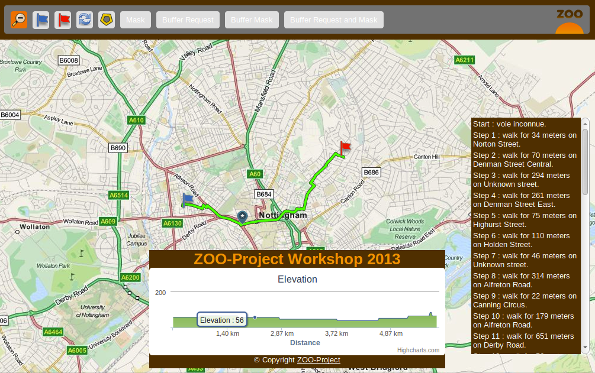

Présentation des blocs de construction - Utiliser des Services Web basés sur OGR et PgRouting¶
Table des matières
Introduction¶
Dans cette section, vous allez utiliser des ZOO-Services basiques: Buffer, Intersection et DifferencePy qui utilisent OGR et des modules psycopg Python. Le but visé de cette section est de présenter et d’interagir avec vos nouveaux blocs de construction avant de les chaîner dans la section suivante.
Tout d’abord, vous devez utiliser les liens suivants pour accéder aux interfaces utilisateur et interagir avec vos services, le premier est utilisé pour accéder à l’interface cliente de démonstration avec outils spatiaux basiques et la seconde pour accéder à l’application de routage :
Forunisseur de services et fichiers de configuration¶
D’abord, vous pouvez vérifier si les ZOO-Services sont disponibles à partir de votre configuration actuelle. Vous pouvez jeter un oeil à Buffer.zcfg, Intersection.zcfg et DifferencePy.zcfg pour obtenir des détails sur les paramètres. Comme vous pouvez le voir depuis les fichiers ZCFG, vous allez utiliser les ZOO-services fournis par le fournisseur de services Python service. Donc, si vous voulez modifier le code Python, vous devrez modifier le fichier correspondant (c’est à dire service.py). Vous êtes invités à utiliser des requêtes similaires à celle utilisée dans les sections précédentes pour en apprendre davantage sur chacun des services individuellement.
Le service Buffer (de tampon)¶
Cliquez d’abord sur une rue, puis une fois que la rue est affichée en bleu, cliquez sur le bouton ‘Buffer’ au dessus, vous devriez obtenir un résultat similaire à celui affiché dans ce qui suit.

Depuis la version 1.2.0 du ZOO-projet, vous pouvez exécuter automatiquement quelques tests basiques pour s’assurer que vous avez écrit un fichier ZCFG correct et que votre service est validé.
Note
le test actuel est vraiment simple et doit être adapté à chaque fournisseur de services, principalement pour définir les noms en entrée.
Vous pouvez utiliser la commande suivante :
cd /home/user/zoo/testing
./run.sh http://localhost/cgi-bin/zoo_loader.cgi Buffer
Note
Pendant ou après l’exécution du test, vous pouvez jeter un oeil à l’intérieur du répertoire tmp qui contient à la fois les demandes XML envoyées au Kernel ZOO et les réponses qu’il a renvoyé (output*.xml).
Le service d’Intersection¶
En utilisant la même interface cliente que précédemment, une fois que vous avez un tampon, vous pouvez sélectionner une rue intersectant la géométrie tampon pour calculer l’intersection en cliquant sur le bouton Intersection.

Le service DifferencePy¶
En utilisant les mêmes instructions que pour Intersection, vous pouvez obtenir le résultat suivant.

Le routage et les services de profil¶
D’abord cliquez sur le drapeau bleu puis placez votre point de départ sur la carte, faire la même chose avec le drapeau rouge pour obtenir le plus court chemin calculé par le service dédié et afficher son profil. Notez que lorsque vous passez la souris sur l’écran du profil, vous verrez sa position correspondante affichée sur la carte. Vous pouvez également cliquer sur une étape spécifique dans votre chemin pour obtenir la ligne correspondante affichée.
{kind=link}
Si vous jetez un oeil dans le fichier: /usr/lib/cgi-bin/routing/do.zcfg vous remarquerez peut-être quelque chose de nouveau dans le format supporté qui est reproduit ci-après.
<Supported>
mimeType = image/png
asReference = true
msStyle = STYLE COLOR 125 0 105 OUTLINECOLOR 0 0 0 WIDTH 3 END
useMapServer = true
extension = json
</Supported>
Le mimeType est défini comme image/png et il ya deux nouveaux paramètres, qui sont tous deux optionnels:
useMapServer: qui vous rend capable d’informer le ZOO-Kernel qu’il a à utiliser MapServer pour publier votre résultat comme WMS / WFS ou WCS (ce dernier ne sera pas utilisé dans ce workshop) plutôt que de simplement stocker le résultat comme un fichier.
msStyle: qui vous laisse définir votre propre définition de bloc STYLE MapServer.
Lorsque vous avez besoin d’accéder à un résultat de noùmbreuses fois ou à des fins différentes en fonction d’autres services alors il est vraiment utile de demander au ZOO-Kernel de publier votre résultat comme WMS, WFS ou WCS.
Notez qu’aucune modification du code du service do a été nécessaire pour gérer la publication automatique du résultat car c’est un format vectoriel supporté par OGR, seule la modification du zcfg était nécessaire.
Cet exemple de routage est ici pour illustrer comme il est facile de publier votre résultat comme ressource WMS, WFS ou WCS. En effet, lorsque votre service de routage a été appelé, le ZOO-Kernel a publié le résultat comme ressources WMS et WFS qui a été utilisé à la fois dans l’interface graphique pour que le WMS affiche la trajectoire résultante sur la carte, que le WFS affiche plus de détails sur chacune des étapes. Le protocole WFS est également utilisé comme valeur d’entrée pour le calcul du profil. Ainsi, le calcul a été exécuté une fois et accédé trois fois pour différents buts et depuis différents clients.
Pour plus d’informations sur le support MapServer, merci de vous référer à la documentation ZOO-Project officielle.
Conclusion¶
Maintenant, vous connaissez ces trois services, et vous avez une interface simple pour interagir avec votre WFS MapServer et vos serveurs WPS ZOO-projet, vous êtes prêts à utiliser les services d’une manière différente, en les chaînant en utilisant la ZOO-API JavaScript pour construire des services plus complexes et plus puissants.